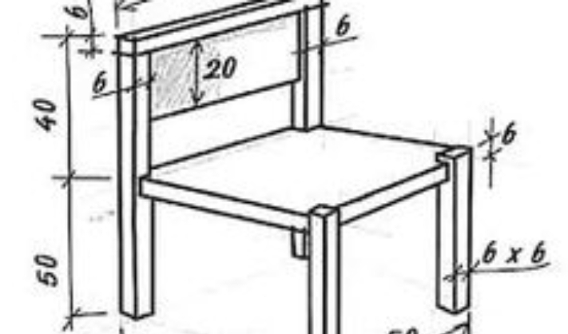
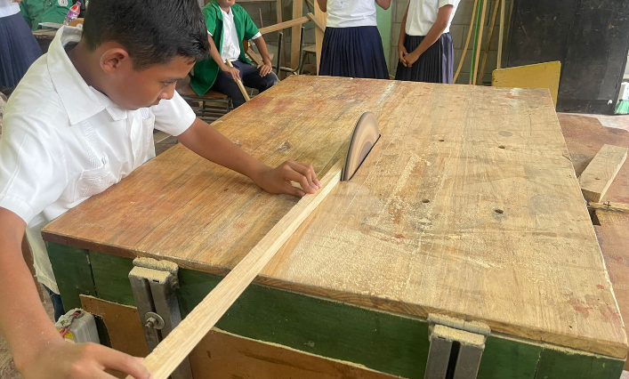
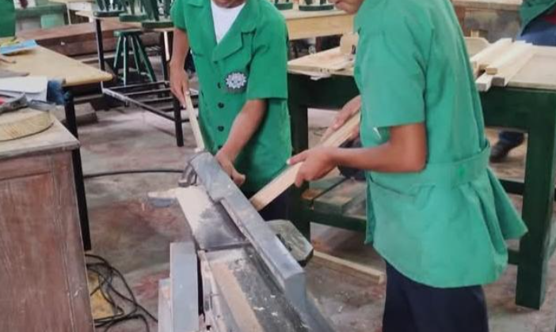
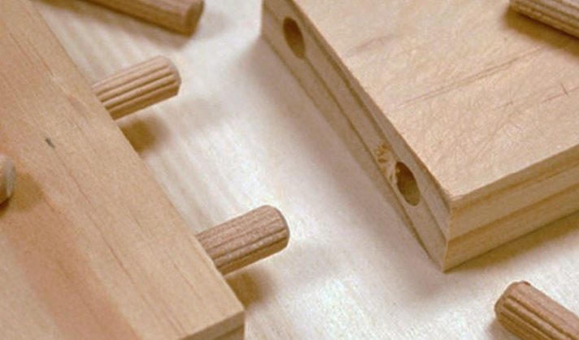
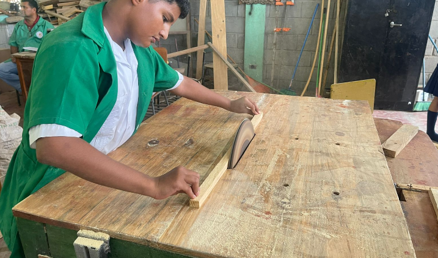

Instituto José Trinidad Cabañas (Olanchito, Yoro)
Área Técnico de Estructuras de Madera
El área de Estructuras de Madera en nuestro instituto acerca a los jóvenes al tradicional y noble oficio de la carpintería y ebanistería. En este taller formativo, los alumnos de tercer ciclo desarrollan la paciencia, el orden y la destreza manual necesarios para transformar la madera en objetos de uso cotidiano.
A lo largo del ciclo, se les instruye en el conocimiento de los distintos tipos de maderas locales, las normas esenciales de prevención en el taller y el manejo seguro de herramientas manuales tradicionales. Esta práctica les enseña a valorar los recursos naturales y les brinda competencias técnicas sólidas, ideales tanto para emprender con pequeños proyectos propios como para continuar hacia bachilleratos técnicos.
Asignaturas y Competencias del Área

Dibujo Técnico Aplicado
Diseño básico en papel de piezas y uniones de madera utilizando herramientas de geometría para planificar las medidas exactas antes de cortar el material.
Competencias que desarrolla:
- Interpretación de figuras y vistas geométricas sencillas.
- Trazado a escala de planos y despieces de muebles básicos.
- Planificación ordenada del trabajo en el papel.
Cubicación y Trazado
Práctica elemental para calcular la cantidad de madera necesaria y realizar marcas precisas sobre las tablas usando metros, escuadras de carpintero y lápiz.
Competencias que desarrolla:
- Medición exacta de longitudes y espesores de la madera.
- Marcado correcto de líneas de corte y centros de guía.
- Aprovechamiento óptimo de los tablones del taller.


Carpintería Básica
Primeros pasos con herramientas manuales comunes. Los estudiantes aprenden técnicas seguras de aserrado, cepillado a mano y lijado para dejar las superficies uniformes.
Competencias que desarrolla:
- Manejo correcto del serrucho, martillo y cepillo manual.
- Preparación y suavizado de las caras de la madera.
- Habilidad manual para dar acabados limpios.
Ensambles y Uniones
Estudio práctico de los métodos sencillos para unir dos o más piezas de madera firmemente, utilizando clavos, tornillos, pegamento blanco y encajes básicos.
Competencias que desarrolla:
- Elaboración de uniones sencillas a escuadra (juntas a tope o a media madera).
- Aplicación correcta de adhesivos y sujeciones mecánicas.
- Verificación de la firmeza y rigidez de la unión.


Fabricación de Proyectos Menores
Integración de las habilidades aprendidas para construir objetos de utilidad práctica escolar o del hogar, tales como percheros, cajas de herramientas o repisas.
Competencias que desarrolla:
- Armado paso a paso de estructuras utilitarias pequeñas.
- Escuadrado y balance de los objetos construidos.
- Presentación final estética del artículo terminado.
Seguridad en el Taller
Asignatura dedicada por entero a la autoprotección del estudiante. Enseña el orden, la limpieza del espacio de labores y los peligros comunes de las astillas y herramientas cortantes.
Competencias que desarrolla:
- Uso mandatorio de gafas protectoras y mascarillas contra el aserrín.
- Organización del banco de trabajo para evitar accidentes de caída.
- Cuidado preventivo propio y hacia los compañeros de grupo.

Acabados y Preservación
Introducción a las técnicas básicas para proteger los proyectos de la humedad y el desgaste natural aplicando selladores sencillos, tintes o barnices a brocha.
Competencias que desarrolla:
- Lijado fino final y limpieza profunda de residuos antes de pintar.
- Aplicación uniforme de capas protectoras con brocha.
- Conocimiento elemental sobre el cuidado y vida útil de la madera.
Personal Docente
Prof. Alejandro Del Arca
Docente especialozado en el area de Madera,docente decidido a enseñar y guiar a los estudiantes de el area de madera.
Prof. Jorge Cruz
Docente especialozado en el area de Madera,docente decidido a enseñar y guiar a los estudiantes de el area de madera.